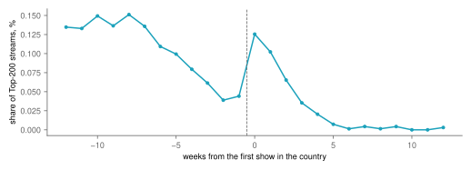
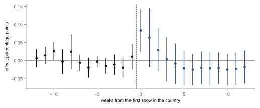
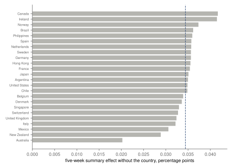

Research · Pop, measured · concerts and streaming, 2017–2018
Does a concert move the charts? Harry Styles's first tour on Spotify
A registered difference-in-differences across 50 countries: the week of his first show in a country lifted his chart share by about 75 %, but the registered five-week effect is inconclusive.
- effect in the week of the first show
- +0.083 pp of the country's Top-200 streams · 95 % uniform band 0.025 to 0.142
- average effect, weeks 0 to +4 (registered)
- +0.034 pp 95 % CI −0.004 to 0.073 · inconclusive
- his share before the show
- 0.112 % of Top-200 streams, treated countries, weeks −12 to −2 · administrative count
- countries
- 50 24 with a show, 26 without · administrative count
Overwhelmed? Here's the short version
- Where he played, people streamed him clearly more in the week of the show, and a little more the week after.
- Three weeks later his share was back where it had been, so the show was an event rather than a lasting gain.
- The registered summary averaged five weeks, which diluted the spike; it is reported as it came out.
- Leaving out any one country does not change the sign, but only the Top 200 is seen, and the study covers one tour.
Photo: Yvette de Wit · CC0, toned
For most artists, concerts now earn more than recordings, and the two are often treated as complements: a show sells the songs, and the songs sell the show. Connolly and Krueger traced how musicians' income moved towards live performance1, and Papies and van Heerde found, for German artists before streaming, that concerts and record sales moved together in ways that depended on the artist2. Streaming makes the question sharper, because listening is now counted every day in every country and can follow a concert within days3. A tour that reaches countries at different dates is close to a natural experiment: the countries not yet visited show what would have happened to the others without a show. Recent methods for such staggered timing45 make the comparison clean. This study asks it of Harry Styles's first solo tour, which visited 24 countries with a Spotify chart between September 2017 and June 2018: did his share of a country's chart rise after he played there, and for how long? It is related to Pop, measured, whose first part describes the same artist's charts and tours.
Data
Spotify publishes a daily Top 200 for each country, with every song's streams that day; a copy of every chart from 2017 to 2021 is on Kaggle6. From it the study takes the charts of countries from March 2017 to December 2018 and sums them by week. In each country and week, the outcome is Harry Styles's share of the streams in the Top 200: his songs' streams divided by all the chart's streams. The share removes the size of each market and the growth of Spotify over the period. 12 of his songs appear in the window, almost all from his first album; the three most streamed are Sign of the Times, Sweet Creature, Kiwi.
The tour article on Wikipedia lists every show7: 90 dated shows, the first in San Francisco on 19 September 2017 and the last of a new country in Mexico in June 2018. A country is treated from the week of its first show. Of the 50 countries with a chart in every week of the window, 24 had a show and 26 did not, among them Czechia, Poland and Austria. 10 countries whose charts start or stop during the window are left out: Bulgaria, Estonia, Israel, Lithuania, Luxembourg, Nicaragua, Romania, South Africa, Thailand, Vietnam. Thailand had a show but no full chart, so it is among them.
The tour came in waves. It opened in North America in September and October 2017, crossed to western Europe in late October and November, went on to Singapore, Australia, New Zealand and Japan in November and December, returned to Europe in March and April 2018 for the countries it had skipped, and ended with South-East Asia in May and Latin America in May and June. The 24 visited countries therefore fall into 16 groups by the week of their first show, most of them of one to three countries, spread over nine months. That spread is what the method needs: in almost every week of the tour some countries had been visited and others had not yet.
The raw numbers already tell most of the story, though they cannot be read as an effect. In the visited countries, his average share of the chart's streams fell from 0.135 % twelve weeks before the show to 0.039 % two weeks before, as his first album aged; it jumped to 0.125 % in the show week, then fell again, to 0.020 % four weeks after and 0.003 % at twelve. The fall before the show would make any simple before-and-after comparison misleading, because the share was dropping everywhere, visited or not; that is why the comparison has to be with countries not yet visited, which were ageing out of his first album at the same time.

How this was done
The design, the outcomes and the rule for reading the result were committed before the chart data were downloaded; the code and the weekly panel were committed before the first estimate. The estimator is Callaway and Sant'Anna's for staggered adoption4. For each group of countries first visited in the same week, it compares their change in share with the change, over the same weeks, in countries not yet visited or never visited. These comparisons are averaged by weeks since the first show, from 12 weeks before to 12 after. Inference uses a bootstrap that resamples countries, and the bands are uniform: they hold for all weeks at once, which is stricter than a separate interval for each week.
The registered summary is the average effect over weeks 0 to +4. It was labelled in advance: "supported" if its interval excludes zero and the weeks before the show show no trend, "not supported" if its interval includes zero and stays within ten percent of the share before the show, and "inconclusive" otherwise. The share before the show was 0.112 % of a country's Top-200 streams, so ten percent of it is a small number, and the rule asks a lot of the data. The method rests on two assumptions. The first is parallel trends: without the show, a visited country's share would have moved like that of the countries not yet visited. The second is no anticipation beyond what the event window allows: the share does not move because a show is coming. Neither can be proven, but both leave traces in the weeks before the show, which is why those weeks are reported. A simpler regression with country and week effects would mix up the comparisons, using countries already visited as controls for those visited later; when effects change over time, as a spike that fades does, that can bias the estimate and even flip its sign8. The estimator used here avoids those comparisons. The weeks before the show test whether visited and unvisited countries were already drifting apart; a placebo moves every first show 26 weeks earlier; and the summary is re-estimated leaving out each visited country in turn.
What a show did
In the week of the first show, Harry Styles's share of the country's Top-200 streams rose by 0.083 percentage points (95 % uniform band 0.025 to 0.142), about 75 % of his share before the show. The band excludes zero even though it covers all 25 weeks at once. In the week after, the estimate is 0.064 points (−0.017 to 0.145), still higher but no longer clearly above zero; it is 0.029 points in the second week and 0.004 in the third. From the fifth week to the twelfth the average is −0.022: the share had returned to where it was, if anything a little below. The week before the show shows 0.011 points: there is no sign that the anticipation alone moved the chart.
The registered summary over weeks 0 to +4 is 0.034 points (95 % CI −0.004 to 0.073), about 31 % of the share before the show. Its interval includes zero and is too wide to rule out an effect of ten percent, so by the rule set in advance it is inconclusive: interval includes zero but is wider than ±10 % of the pre-period mean. The five-week window was chosen before the data were seen, on the expectation that an effect would last a few weeks. It did not, and averaging two strong weeks with three flat ones diluted it. Both the single week and the registered summary are reported here; the headline does not swap one for the other.
In streams, the effect is modest. A visited country's Top 200 held on average 77 million streams in the show week, so 0.083 percentage points is roughly 64 000 extra streams of his songs in that country that week, and about 1.5 million across the 24 countries together. This is a back-of-the-envelope figure, the share effect times the average chart, and it counts only streams of songs that were in the chart. A sold-out arena holds ten to twenty thousand people, so the extra streams in a week are a few per person in the hall, or a little from many others; the data cannot say which.

The same pattern holds for the number of his songs in the chart. In the show week the chart held 0.29 more of his songs on an average day (band 0.09 to 0.49), against 0.45 before the show; over five weeks this outcome too is inconclusive. Restricted to his three biggest songs, the summary is 0.034 points and inconclusive, almost the whole of the main effect: the show lifted the songs people already knew rather than bringing new ones into the chart.
Where the jump was largest
The following is descriptive and was not registered: for each visited country, the change in his raw share from the four weeks before the show to the show week, without any comparison group. The largest jumps, in percentage points, were in New Zealand (+0.314), Australia (+0.312), Belgium (+0.210), Singapore (+0.194): all visited after the opening legs in North America and western Europe, while his album was still in their charts. In Canada (−0.126), Sweden (−0.097), United Kingdom (−0.066), United States (−0.041), France (−0.030) the raw share fell in the show week; these were among the first countries visited, in the autumn of 2017, when his album was leaving the charts quickly from a high level, and the fall before the show simply went on. In 5 countries, Spain, Brazil, Philippines, Japan, Germany, he was not in the Top 200 in those weeks at all, so any effect was below what the chart shows. These raw changes are not effects: the estimate in fig. 2 compares each country with others at the same time, which is what turns a falling line into a measured rise.
Checks
Comparing with countries never visited only, rather than also with those visited later, gives a summary of 0.031 points (−0.006 to 0.069), close to the main estimate. Leaving out each visited country in turn keeps the summary between 0.020 (without Australia) and 0.042 points (without Canada); without the United States it is 0.035, without the United Kingdom 0.032. No single country carries the result. The placebo, which pretends every show happened 26 weeks earlier, gives −0.180 points with a wide interval (−0.423 to 0.063) that includes zero: it finds no false effect, but it is a weak test, because moving early shows back pushes them out of the window.
Of the eleven weeks from −12 to −2, 1 has a band that excludes zero: week -10 (0.003 to 0.050 points). One week in eleven is about what chance produces, and the weeks nearest the show are flat, but the registered rule counts it, and it is one reason the label is not "supported".
How large an effect could the design have caught? The interval of the five-week summary is about ±34 % of his share before the show. An average effect over five weeks smaller than that could not be told apart from none, which is why the rule's ten-percent threshold for "not supported" was out of reach. A single strong week clears that bar easily; a lasting effect of a few percent would not have. With 24 visited countries and one tour, that is the limit of what these data can say, and more tours, later in an artist's career, would be needed to narrow it.

What this means
Measured: a first concert in a country lifted Harry Styles's share of its Spotify chart by about 75 % in the week of the show, and the lift was gone within three weeks. Over the registered five weeks the average effect is positive but inconclusive. For someone planning a tour, what the data support is narrow: a show is a spike in local listening, concentrated on songs fans already played, and not, in this tour, a lasting gain in the chart. That fits a picture in which most of the people at a show were already listeners and played the songs before and after it, while the rest of the country did not catch on. Whether a larger tour, a later career stage or a country's first visit by a star would differ is open; the next parts of Pop, measured can ask the same of other artists.
What this does not show
Only the Top 200 is published, so listening below it is invisible; in a country where he was outside the chart before and after the show, a rise that did not reach the chart counts as nothing. Spotify is one service, and radio, video and the show itself are not measured. The estimate bundles everything that came with a show: the performance, the press and social media around it, and fans preparing for it. The tour started months after his first album, so the effect is for an artist on his first record and may not hold for one with many. His second and larger tour, Love On Tour (2021–2023), would be the natural test, but the public daily charts end in 2021, when that tour had played only in the United States; he has not toured since July 2023. Countries were not visited at random: promoters chose large and nearby markets first, and the method relies on the countries visited later being a fair comparison for those visited earlier, which the flat weeks before the shows support but cannot prove. Nothing here says anything about revenue.
Reproduction
Every number on this page is filled in from assets/concerts/results.json by a script. Download the Kaggle file to tools/data/concerts/charts.csv and check its hash; then, from the repository root:
tools/concerts/prepare.py: the weekly panel, the shows and the songs.estimate.py: the registered estimates and checks.article.py: the figures and this page.
The design is docs/research/concert-effect-design.md.
References
- Connolly, M., Krueger, A. B. (2006). Rockonomics: the economics of popular music. In Handbook of the Economics of Art and Culture, vol. 1, 667–719. Elsevier. doi:10.1016/S1574-0676(06)01020-9. Accessed 2 October 2026.
- Papies, D., van Heerde, H. J. (2017). The dynamic interplay between recorded music and live concerts: the role of piracy, unbundling, and artist characteristics. Journal of Marketing 81(4), 67–87. doi:10.1509/jm.14.0473. Accessed 2 October 2026.
- Aguiar, L., Waldfogel, J. (2018). As streaming reaches flood stage, does it stimulate or depress music sales? International Journal of Industrial Organization 57, 278–307. doi:10.1016/j.ijindorg.2017.06.004. Accessed 2 October 2026.
- Callaway, B., Sant'Anna, P. H. C. (2021). Difference-in-differences with multiple time periods. Journal of Econometrics 225(2), 200–230. doi:10.1016/j.jeconom.2020.12.001. Software: csdid for Python. Accessed 2 October 2026.
- Roth, J., Sant'Anna, P. H. C., Bilinski, A., Poe, J. (2023). What's trending in difference-in-differences? A synthesis of the recent econometrics literature. Journal of Econometrics 235(2), 2218–2244. doi:10.1016/j.jeconom.2023.03.008. Accessed 2 October 2026.
- Dave, D. (2022). Spotify Charts: daily Top 200 and Viral 50 by region, 2017–2021. Kaggle, Open Database License. kaggle.com/datasets/dhruvildave/spotify-charts. Accessed 2 October 2026.
- Wikipedia contributors (2026). Harry Styles: Live on Tour, revision 1342196247. en.wikipedia.org. Accessed 1 October 2026.
- Goodman-Bacon, A. (2021). Difference-in-differences with variation in treatment timing. Journal of Econometrics 225(2), 254–277. doi:10.1016/j.jeconom.2021.03.014. Accessed 2 October 2026.
Change log
- 2 October 2026, version 1: first published.
- Checked against editorial standard v1 on 2 October 2026.